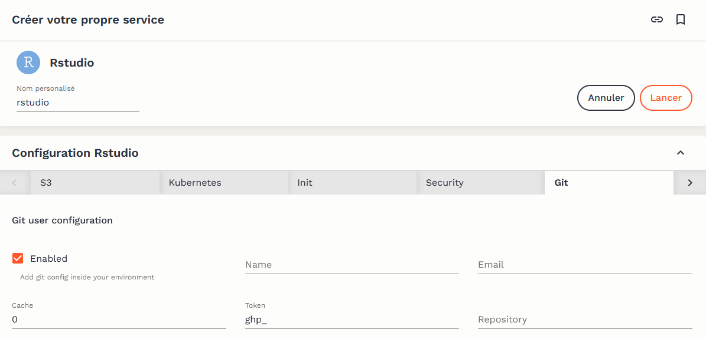

Version Control
Why use version control?
The Datalab is a shared platform where resources used by services are shared among different users. As such, Datalab services operate on the model of ephemeral containers: in a standard usage, the user launches a service, performs data processing, saves the code that was used to perform these processes, and then deletes the service instance. This code backup is greatly facilitated by the use of version control.
However, this performance consideration should not be seen as a constraint: version control is an essential best practice in development. The benefits are numerous, both individually:
- The local project is synchronized with a remote server, making the loss of code almost impossible.
- The complete history of choices and modifications made on the project is preserved.
- The user can browse this history to search for modifications that may have caused errors and decide at any time to revert to a previous version of the project or specific files.
and in the context of collaborative projects:
- Simultaneous work on the same project is possible without the risk of loss.
- The user can share their modifications while benefiting from the changes made by others.
- It becomes possible to contribute to open-source projects, for which the use of Git is widely standard.
This tutorial aims to present how version control can be easily implemented using the tools available on the Datalab. It does not explain the workings of Git and presupposes a certain familiarity with the tool. Many online resources can serve as an introduction; for example, R users can consult this training program, and Python users can refer to this chapter of the course.
Integrating GitHub with Datalab
Why GitHub?
Although offline use of Git is possible, the real benefit of version control lies in synchronizing the local copy of a project (clone) with a remote repository (remote). Various software forge services allow this synchronization of Git projects, the most well-known of which are GitHub and GitLab. Since GitHub has much more visibility today — for example, the repositories of Insee, InseeFr, and InseeFrLab, are on GitHub — Datalab offers an integration with GitHub, which we present in this tutorial.
The rest of the tutorial requires having a GitHub account.
While using Datalab with the GitHub platform is facilitated, it is by no means mandatory: it is still possible to use the software forge of your choice for project synchronization. A forge based on GitLab is also available to Datalab users.
Creating an access token
Synchronization with a remote repository requires authentication with GitHub. This is done using a personal access token, which must be generated from the user’s GitHub account. The generation service is accessible at this address. The GitHub documentation provides illustrations to guide the process.
To generate a token, it is necessary to choose a token name, an expiration date, and access rights (scope). It is recommended to choose a short expiration date (30 days) and limited access (repo only) to reduce security risks in case the token is maliciously exposed.

Once the token is generated, it will be displayed on the screen. A token can only be viewed once; if lost, a new one must be generated.
Adding the access token to Datalab
It is recommended to add access tokens to a password manager. Alternatively, the token can be added to the “External Services” configuration of the user account on Datalab, which allows the token to be directly accessible within the services offered on the platform.

Be sure to use the email address associated with your GitHub account in the “Account Information.” It is this address that effectively links the commits you make to your GitHub account.
Using Git with Datalab services
Git is pre-configured to work natively with the relevant Datalab services. When opening a service, it is possible to configure certain elements. If you have added a GitHub access token to your Datalab account, it will be pre-configured. It is also possible to indicate the complete URL of a Git repository (e.g., https://github.com/InseeFrLab/onyxia), which will then be cloned into the instance’s workspace during initialization.

Via the terminal
The GitHub access token is available in the terminals of different services via the environment variable $GIT_PERSONAL_ACCESS_TOKEN. To avoid having to authenticate for every operation involving the remote repository (clone, push, and pull), it is recommended to clone it, including the access token in the HTTPS link, using the following command:
git clone https://${GIT_PERSONAL_ACCESS_TOKEN}@github.com/<owner>/<repo>.git
where
Via integrated graphical interfaces
The main code production services available on Datalab have a graphical interface to facilitate the use of Git:
- RStudio: RStudio provides a native and fairly comprehensive graphical interface for Git. The utilitR documentation presents its operation in detail.
- Jupyter: the jupyterlab-git plugin provides a (fairly basic) interface between Jupyter and Git.
- VSCode: VSCode natively offers a well-integrated graphical interface with Git and GitHub. A detailed documentation presents the possibilities of the tool.
Graphical interfaces make it easier to get started with Git but never completely replace the use of the tool via a terminal due to necessarily imperfect integration. Therefore, it is useful to familiarize yourself with using Git via the terminal as early as possible.